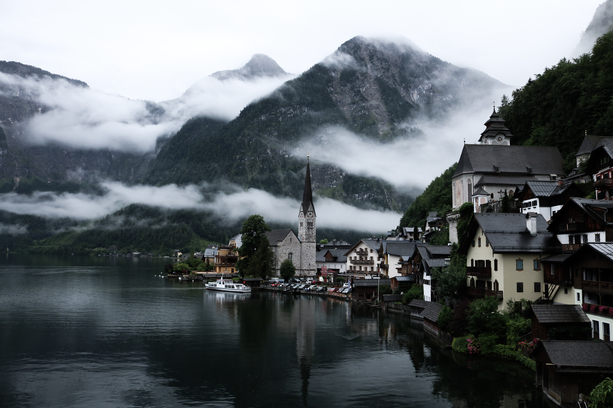

ISUD is a society of scholars, mostly philosophers, from many parts of the world, devoted to promoting international dialogue and the discussion of fundamental questions of universal concern, which affect all humanity, such as world peace, human rights, dialogical interrelations of diverse cultures,and preservation of the world ecology.
What is the relationship between the basic liberties of individuals and the collective rights of cultural groups? Join us in the search for answers and more question.Become an active member with the ISUD. Email us spices@gmail.com for more information.